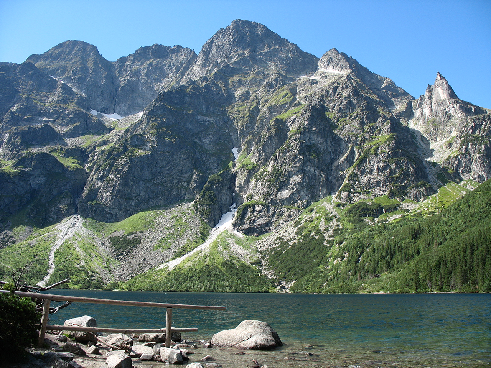

Карпати — природа та гори

Карпати — гірський регіон України з красивими лісами, горами, річками та мальовничими краєвидами.
Чому я обрав Карпати
Карпати я обрав через природу, чисте повітря, гори та можливість спокійно відпочити далеко від великого міста.
Цікаві факти
- Українські Карпати розташовані на заході України.
- У Карпатах знаходиться найвища гора України — Говерла.
- Регіон відомий природою та туристичними маршрутами.
Цікаві місця
- Говерла
- Буковель
- озеро Синевир
- водоспад Шипіт
Особиста оцінка
Оцінка: 10/10